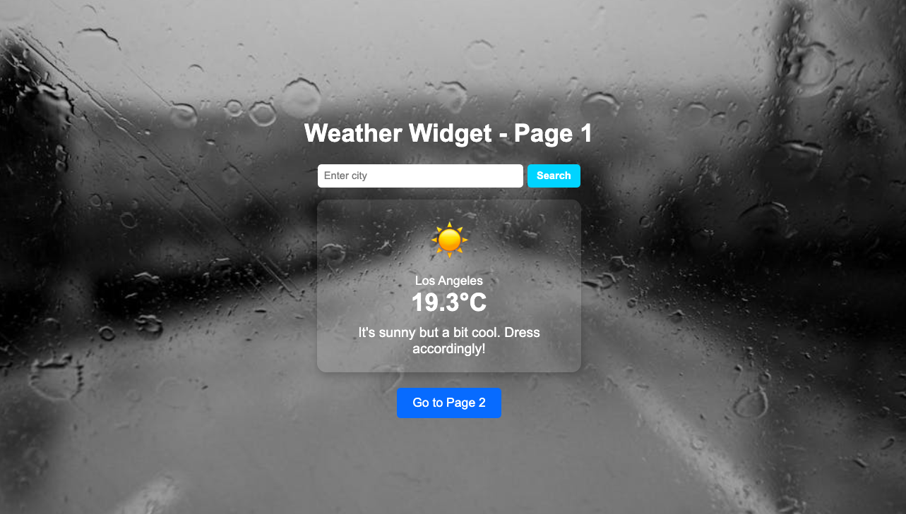
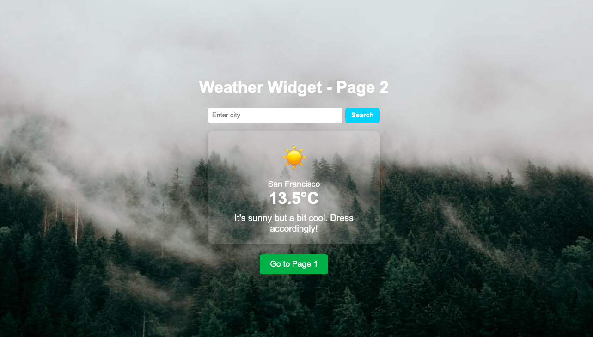

Web Component Development Notes
Project Overview
The project involves creating a reusable <city-weather> web component to display weather information for a given city. By default, the widget shows the weather for Los Angeles. A form allows users to input another city name, which updates the component dynamically. The widget is encapsulated in a JavaScript module and integrated into two pages to demonstrate reusability.
Challenges Faced
- Understanding the
Custom Elements API and lifecycle callbacks such as connectedCallback and attributeChangedCallback.
- Fetching live weather data from an API and handling edge cases such as invalid city names or network issues.
- Dynamic attribute manipulation and ensuring updates reflect in the component seamlessly.
- Modularizing the widget code into a reusable JavaScript module while ensuring compatibility across different pages.
Approach
- Studied the
Custom Elements API documentation to understand how to define and use web components.
- Created a basic
<city-weather> component with default behavior for Los Angeles.
- Encapsulated styles using the shadow DOM to prevent conflicts with global CSS.
- Integrated a form for user input and added an event listener to update the component's
city attribute dynamically.
- Fetched weather data using a free weather API, handling errors gracefully with fallback messages.
- Packaged the widget code as a JavaScript module for reuse and imported it into two separate HTML pages.
Improvements
- Optimize API requests by debouncing user input to avoid excessive calls.
- Add unit tests for the web component to ensure robustness and prevent regressions.
- Enhance the user interface with better styling and animations.
- Cache weather data for frequently searched cities to improve performance.
- Provide a fallback for browsers that do not support web components natively, using a polyfill.
Reflection
This project highlighted the flexibility and power of web components for creating reusable, framework-agnostic UI elements. The modular approach significantly simplifies maintenance and integration across projects. Despite initial challenges, working with web components proved to be an efficient and rewarding experience.


Chat Gpt Link
Link for chatgpt